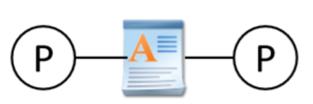
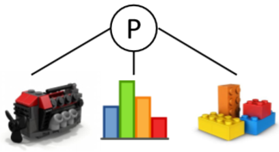

操作系统考点总结（按章节）
Chapter 1
updated in 2023.1.13
1. Monolithic OS（单一型）的优缺点？（单一型是os类型之一，用户和系统放在一起）
- 优：(1) efficient; (2) better performance
- 缺：(1) Difficult to impose security; (2) difficult to maintain
2. Layered OS：
- 优：security
- 缺：hard to manage; weak performance
3. Micro-Kernel OS (微内核os)：
- 优：security；extensible
- 缺：inefficient
4. Library OS (库操作系统)：
- 优：libraries provide additional security and personality
- 缺：less consistency(缺乏稳定性)
Chapter 2
updated in 2023.1.13
1. One or more threads in a single process
- Thread: smallest sequence of instructions managed independently by scheduler.
- Scheduler: method for how work is assigned to resources to complete work
2. Concurrency & parallelism (并发和并行)的区别？
- Concurrency: processes are underway simultaneously, different processes execute one by one.
- Parallelism: Multiple (n > 1) processes executing simultaneously.
- 对于并发，在同一时间点任务不同时execute；对于并行，在同一时间点任务一定同时execute，并发和并行都是针对process而言的
- Processes are always concurrent, but not always parallel
3. 怎样创建一个线程：通过implement Runnable 类，里面有一个public void run( ) 方法
- Define class R which implements Runnable
- Create your objects
- Make an instance of class R
- Make a thread instance by passing instance of class R to the constructor of class Thread
- Class start() method of the thread instance
- This causes java to immediately execute R.run() as a new thread
- 替代方法还可以创建一个类继承Thread类，理论上和实现Runnable是一样的
1 2 3 4 5 6 7 8 9 10 11public class MessagePrinter extends Thread { String message; public MessagePrinter(String m) { message = m; } public void run() { for(int i = 0; i < 1000; i++) System.out.println(message); } }
4. Processor（处理器）, program（程序）, process（进程） 三者区别？
- Processor: Hardware device that executes machine instructions
- Program: Instruction sequence; Stored on disk 指令集；存储在硬盘上
- Process：Program in execution on a processor; store in primary memory
- Program may be executed by multiple processes at the same time 
- Process can run multiple programs. (多个thread) 
5. When do we not have to worry about concurrency?
- no shared data or communication
- read only data
6. When should we worry about concurrency? （并发带来坏的影响）
- Threads access a shared resource without synchronization
- One or more threads modify the shared resource
Chapter 3
updated in 2023.1.13
1. Moore’s Law: Number of transistors in dense(密集) integrated circuits doubles every 2 years.
2. 为什么要用并行？（两个原因）
- Moore’s Law(硬件): Number of transistors in dense(密集) integrated circuits doubles every 2 years.
- Amdahl’s Law(软件)：Speed up is limited by the serial（程序串行） part of the program
3. Definition of race condition
- An error (e.g. a lost update) that occurs due to multiple processes ‘racing’ in an uncontrolled manner through a section of non-atomic code
4. 什么是临界区（critical section）?
- Code section that accesses a shared resource.
5. What is Mutual exclusion?
- Only one thread can run within the critical section at any given time
6. 建立临界区的4种方法？
- Lock:
- 设置两个状态held/not held，held表示有线程在critical section
- acquire代表需要lock，release代表不需要lock

acuqire( ) and release( ) - lock在java中通过synchronized语句实现，synchronized可以应用于任何的代码块
1 2 3 4public void synchronized update (int a) { balance=balance+a; }
- Monitors
- Semaphores
- Message

7. Atomic
- A property of a sequentially-executed section of code
- A context switch can’t happen (by definition) while an atomic section of code is being executed
8. Lock acquire( ) only blocks threads attempting to acquire the same lock. Must use same lock for all critical sections accessing the same data.
9. Three steps of context-switching sequence
- De-schedule currently-running thread
- Scheduler selects ‘best’ ready thread to run next
- Resume newly-selected thread
Chapter 4
updated in 2023.1.16
1. 信号量（改错）：
|
|
- P等同于wait，V等同于signal
sleep是通过把这个线程放到waiting queue中来block这个线程wakeup是唤醒waiting queue中的线程，并放到running queue中
2. P，V操作如何在java和C下实现的？
- Java: wait() & notify()
- C: acquire() & release()
- Unix: sleep() & wakeup()
- Distributed system分布式系统（Message Passing）: send() & receive()
3. 虚假唤醒（Spurious wakeup）是考试中一道大题
|
|
- 什么时候会引起虚假唤醒？
- Answer: Does not recheck the condition，把P中的
if改为while
4. 编程题： put() get()操作
|
|
5. Java中的semaphore
|
|
- P中要使用
while来判断是否要wait，因为如果条件满足要一直wait - V中要使用
notifyAll()，而不是notify()，因为notify()会导致deadlock